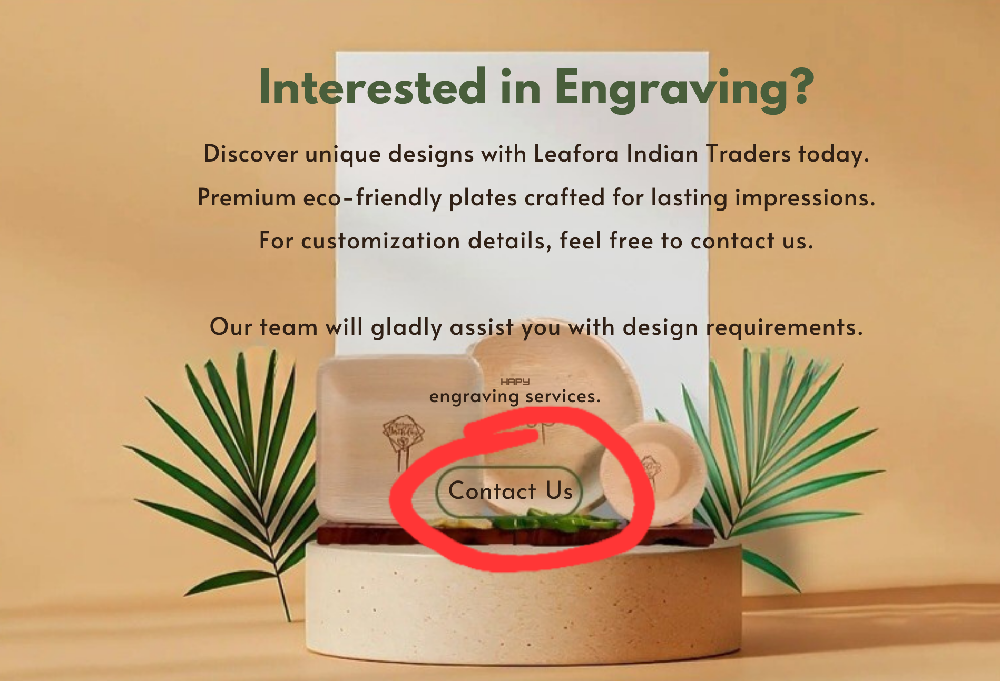

100%
naturalCHEMICAL FREE
MANUFACTURING

“One idea, multiple impacts”
With over ten years of research, implementation of a bio-ethical business model, and deep market understanding, Leafora Indian Traders presents eco-friendly disposable palm leaf plates made from naturally fallen areca leaves.
“The greatest threat to our planet is the belief that someone else will save it.”
Leafora Indian Traders is a green business initiative producing sustainable, biodegradable dinnerware from areca palm leaves.
We use naturally fallen leaves, hygienic handling, and chemical-free methods. Every product is crafted for eco-conscious buyers and global standards.
Natural • Sustainable • Premium Areca Leaf Products
CHEMICAL FREE
MANUFACTURING
PRIVATE LABELLING
& CUSTOM BRANDING
Leafora Indian Traders focuses on quality eco-friendly exports and sustainable manufacturing.
Choose premium areca leaf plates from trusted sustainable brands like Leafora.
Top suppliers are usually from arecanut-growing regions with reliable processing practices.
Manufacturers with hygienic facilities and export quality checks stand out.
Leading exporters combine scale, consistency, and sustainable sourcing.
Yes. They are biodegradable, compostable, and made from naturally fallen leaves.